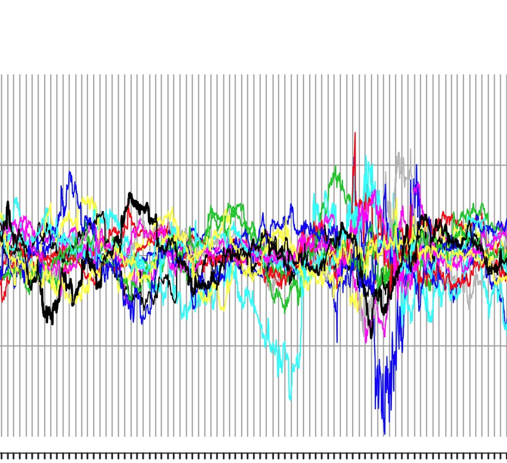

(updated 03/26/2026)
contact nmimoto@uakron.edu with any questions.
[Home]
This is an opportunity to do undergrauate (or graduate) research at UAkron.
This is a place for students and I to get together to talk about
various current issues surrounding
Stats/Data Science/Actuarial Science.
Our world is rapidly changing.
See below for some list of things I'm interested in.
Fell free to bring your own topic!
You can register for 1cr to explore some ideas, participte in discussion,
learn some new things and give two 10min presentation per semester
on the topic of your choice.
Or, youcan register for 2cr if you have a big project alrealy in mind.
If you accumulate 3cr, this will count as Stat Elective.
You can also just show up to the meeting without registering, and
hang out. All are welcome.

Undergrad (and grad) research oppoortunity at UAkron. We meet weekly to discuss and learn current issues surrounding data. All are welcome.